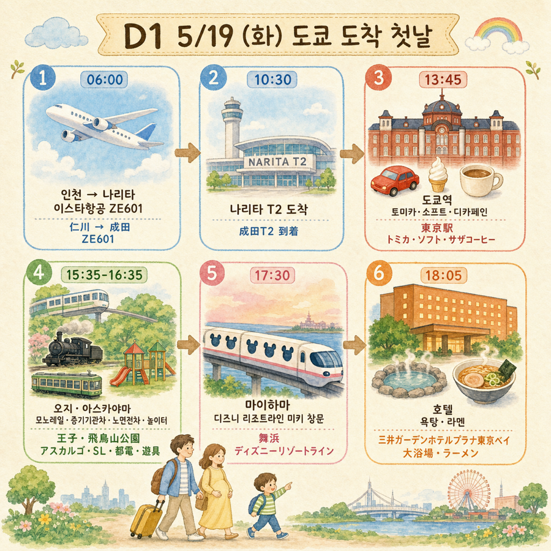
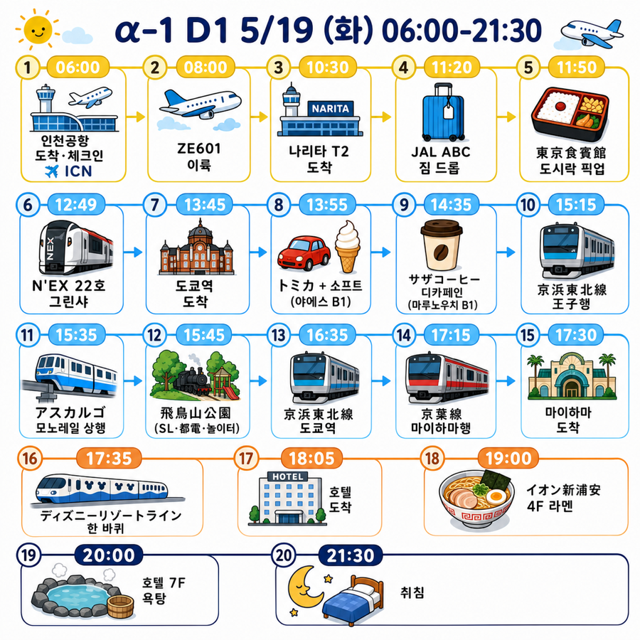
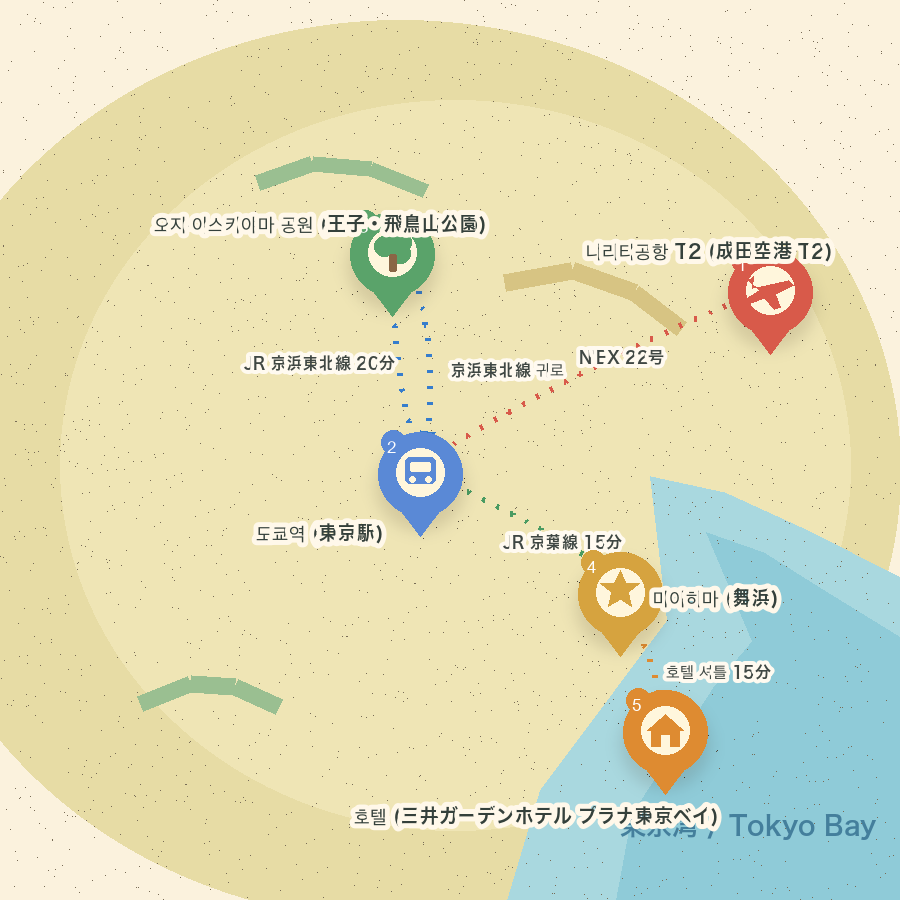
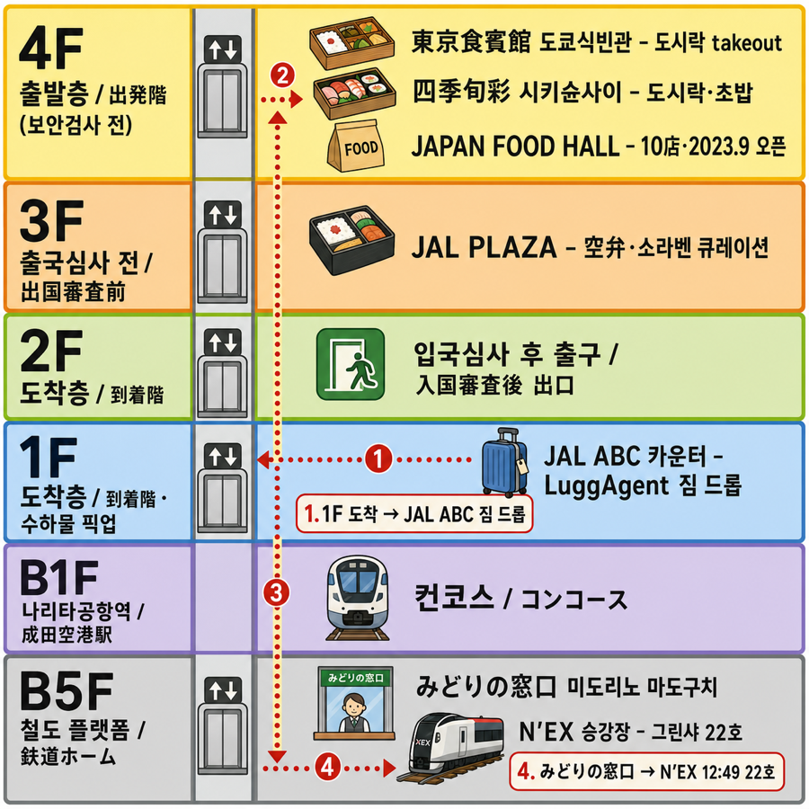
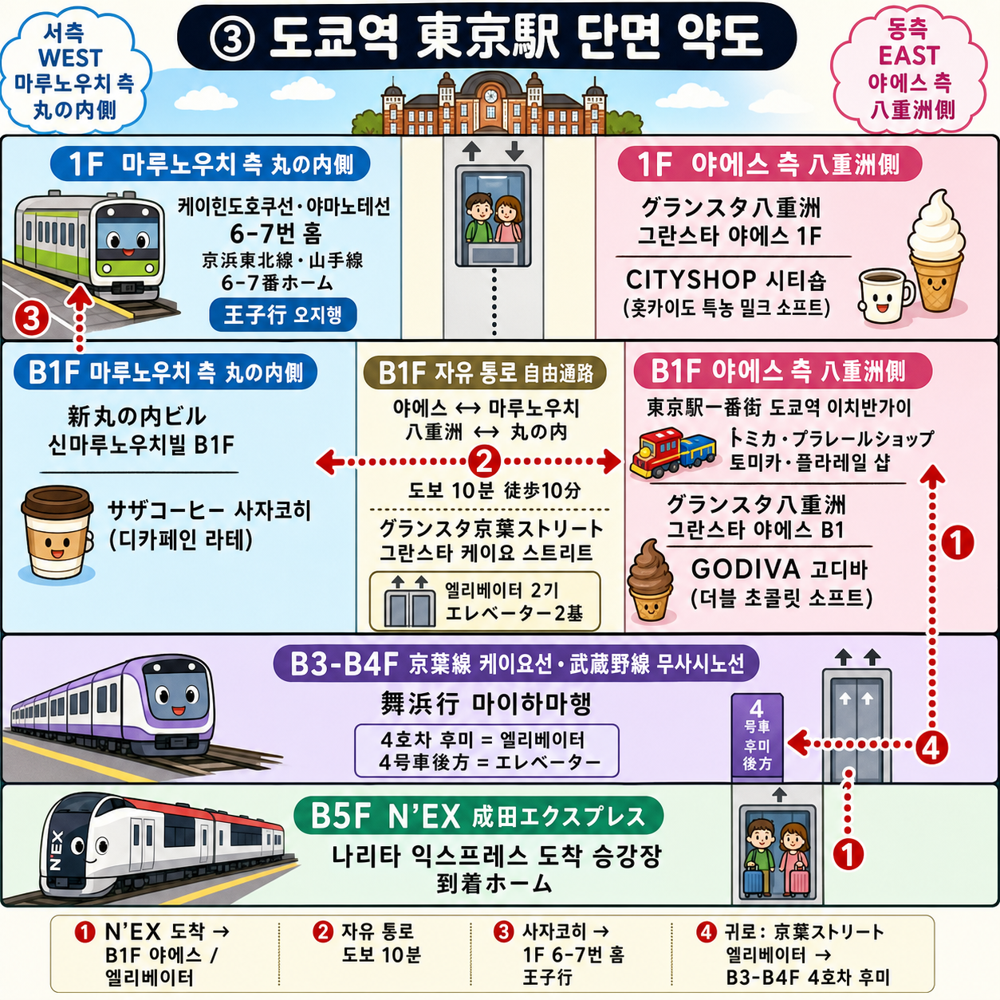
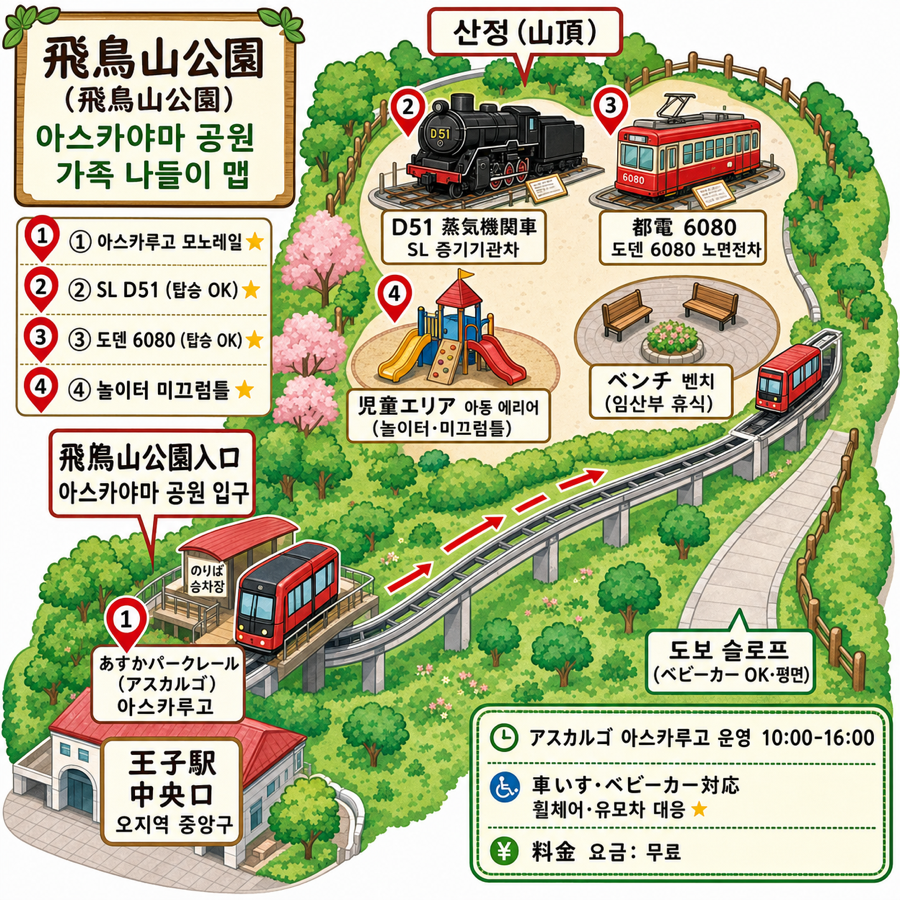

D1 — 5월 19일 (화) 도쿄 도착 첫날
D1 — 5월 19일 (화) 도쿄 도착 첫날
도쿄 도착 + 토미카 + 소프트 + 사자코히 디카페인 + 아스카야마 트레인 잭팟 + 호텔 늦은 도착
가족 3명 (수억·아람·준혁) / 임산부 16주 + 5세
① 한눈 브리핑 카드

ICN → NRT → 도쿄역 → 오지·아스카야마 → 마이하마 → 호텔 — 6단계 흐름 카드
α-1 전체 타임라인 (06:00-21:30)

② 광역 동선 지도

핀 5종 (나리타·도쿄역·오지·마이하마·호텔) + 노선별 동선 화살표. 한자 라벨 정확. 한·일 폰트 약식 일러스트 — 정확한 노선·소요시간은 본문 표 참조.
🌐 인터랙티브 동선 지도 (브라우저 열기): D1_folium.html — 핀 5개 클릭 시 시간·일본어·동선 메모 풀 팝업.
한 줄 요약
ICN 출국 → NRT 도착 → 짐 드롭 + 도시락 픽업 → N'EX 22호 12:49 그린샤 (車内 점심)
→ 도쿄역 13:45 → 토미카+소프트 (야에스 B1) → 사자코히 디카페인 (마루노우치 B1)
→ 王子(오지)역 → 아스카야마 공원 (모노레일·SL·도덴·놀이터 60분)
→ 도쿄역 → 마이하마 → 디즈니 리조트라인 → 호텔 → 라멘 + 욕탕 → 21:30 취침시간순 일정
06:00-10:30 · 인천 T1 → 나리타 (이스타항공 ZE601)
- 06:00-08:00 인천공항 T1 도착·체크인·보안
- 임산부 우선 통로 사용 (마타니티 마크 배지)
- 압박 양말 미리 착용 (비행 부종 방지)
- 08:00-10:30 이스타항공 ZE601 (좌석 1A·1B·1C 한 줄)
- 1열 = 발 펴기 좋음
- 임산부 안전벨트 = 배 아래로
- 5세 = 창가 좌석 1A (구름·하늘 풍경)
일본어 1줄 (도착 직후 카운터·승무원에게)
| 한국어 | 일본어 | 발음 |
|---|---|---|
| 임산부입니다 | 妊婦です | 닌푸데스 |
| 화장실 가까운 좌석 있나요? | お手洗い 近くの 席が ありますか? | 오테아라이 치카쿠노 세키가 아리마스카? |
10:30-12:30 · 나리타 도착 + 짐 드롭 + 도시락 픽업
③ NRT T2 (나리타 제2터미널) 약도

4F (東京食賓館·四季旬彩·JAPAN FOOD HALL) → 3F (JAL PLAZA) → 2F (도착출구) → 1F (JAL ABC·LuggAgent) → B1F (나리타공항역) → B5F (미도리노 마도구치·N’EX 승강장). 우리 동선 ①②③④ 화살표.
10:30-11:00 NRT T3 입국·VJW QR·세관
- VJW QR = 가족 3인 각자 (5/17~18 발급 예정)
- 일본어 1줄:
| 한국어 | 일본어 | 발음 |
|---|---|---|
| 가족 3명입니다 | 家族 3人 です | 카조쿠 산닝데스 |
11:00-11:20 T3 → T2 무료 셔틀 (5-10분)
11:20-11:50 NRT T2 JAL ABC 카운터 (도착층 1F) — 캐리어 2개 드롭
- 클룩 LuggAgent 당일 배송: 캐리어 24인치·28인치 → 호텔 21시 전 도착
- 핸드캐리만 가지고 도쿄 시내 자유 이동
일본어 1줄 (JAL ABC 카운터)
| 한국어 | 일본어 | 발음 |
|---|---|---|
| 호텔 배송 부탁드립니다, 당일 내로 | ホテル 配送 お願いします、本日中で | 호테루 하이소우 오네가이시마스, 혼지츠츄데 |
11:50-12:20 도시락 픽업 (T2 4F)
| 매장 | 층 | 영업 | 특성 |
|---|---|---|---|
| 東京食賓館 (도쿄식빈관) | T2 4F 본관 | 08:00-20:00 | 도쿄 명품 도시락·과자 풀. 도쿄역 駅弁 일부 위탁. 차내 takeout OK |
| JAL PLAZA | T2 3F 출국심사 전 | – | 空弁 (소라벤)·인기 駅弁 큐레이션 |
| 四季旬彩 (시키슌사이) | T2 4F 본관 北측 | 07:00-21:00 | 도시락·초밥 ¥1,000-2,000 |
NRT T2 본관에 駅弁屋 (도쿄역 200종) 없음. 공항 도시락 = 空弁 (소라벤). 풀 = JAL PLAZA + 東京食賓館
5월 시즌 미식 키워드 - 봄 끝물 = 죽순·산채·신두 (콩) - 신록 시즌 = 初鰹 (はつがつお, 하츠가츠오, 첫 가다랑어 — 5월 절정)·真鯛 (마다이, 도미) - 봄 디저트 = 딸기·요모기 (쑥)
일본어 1줄 (시즌 도시락 고르기)
| 한국어 | 일본어 | 발음 |
|---|---|---|
| 이 계절 제철 도시락 어떤 거죠? | この 季節の 旬の お弁当は どれですか? | 코노 키세츠노 슌노 오벤토와 도레데스카? |
5세 친화 도시락 — 검증된 인기
| 도시락 | 왜 5세? | 임산부 안전 |
|---|---|---|
| 신칸센 E5 はやぶさ (하야부사) 弁当 ⭐⭐⭐ | 신칸센 모양 박스 = 잭팟·박스 집까지 | 닭·계란말이 완전 익힘 |
| 치바 보소 牛肉 (규니쿠) 弁당 | 와규 데리야키·맛 익숙 | 익힌 고기 |
| 이부키 오니기리 弁당 | 주먹밥 3종·손으로 집기 | 익힘 |
| 에비후라이 (에비후라이) 도시락 | 새우 튀김·5세 인기 | 익힌 새우 |
| 회·생어 초밥 | — | 임산부 회피 |
1순위 = 신칸센 はやぶさ (하야부사) 박스. 검증된 베스트셀러·5세 잭팟·박스 기념품화.
12:20-12:35 T2 → 나리타공항역 (B5F·도보 5분, 엘리베이터)
12:35-12:45 みどりの窓口 (미도리노 마도구치)
- 그린샤 좌석 확인
- マタニティマーク (마타니티 마크) 추가 발급 가능
일본어 1줄 (미도리노 마도구치)
| 한국어 | 일본어 | 발음 |
|---|---|---|
| 마타니티 마크 주세요 | マタニティマーク を ください | 마타니티 마크오 쿠다사이 |
| 그린샤 22호 12:49입니다 | グリーン車 22号 12:49 です | 구린샤 니쥬니고우 쥬니지 욘쥬큐분데스 |
12:49-13:45 · N’EX 22호 그린샤 (車内 점심)
- 12:49-13:45 나리타 익스프레스 (成田エクスプレス / N’EX) 22호 グリーン車 (그린샤) — 도쿄역까지 56분
- 그린샤 = 1+2열·넓은 좌석·짐 공간 풀
- 車内 (샤나이, 차내)에서 도시락 식사 🍱
- 차창 풍경 = 전원 → 도쿄 시내로 변하는 일본 첫인상
- 5세 = 신칸센·기차 환호
일본어 1줄 (차장 검표 시)
| 한국어 | 일본어 | 발음 |
|---|---|---|
| 그린샤 티켓입니다 | グリーン券 です | 구린켄데스 |
| 화장실 어디예요? | お手洗い どこですか? | 오테아라이 도코데스카? |
13:45-14:25 · 도쿄역 야에스 B1 — 토미카 + 소프트 아이스크림
③’ 도쿄역 (東京駅) 약도

1F 야에스 (CITYSHOP 소프트) · 1F 마루노우치 (케이힌도호쿠선 6-7번 홈) · B1F 야에스 (토미카샵·GODIVA) · B1F 자유 통로 (京葉ストリート 엘리베이터 2기) · B1F 마루노우치 (사자코히) · B3-B4F 京葉線 4호차 후미 · B5F N’EX. 동선 ①②③④ 화살표.
13:45-13:55 N’EX 지하 5F → 야에스 B1 (엘리베이터 10분)
13:55-14:25 トミカ・プラレールショップ (토미카·플라레일 샵) + 소프트 (이치반가이 B1)
トミカ組み立て工場 (토미카 쿠미타테 코죠우, 토미카 조립 공장) — 풀 가이드
매장 중앙 상설. 점원 눈앞 조립. 5단계: 1. 본체 (보디) 선택 — 차종 픽 (도쿄역 한정 차종 ⭐) 2. シート (시토, 시트) 색 선택 — 5-10색 풀 3. 窓 (마도, 창문) 색 선택 — 무색·블루·그린·옐로우 4. 점원 조립 — 5세 = 옆에서 손짓 OK (작업대 안쪽) 5. 세계 단 1대 = 내 토미카 (집까지)
| 항목 | 정보 |
|---|---|
| 가격 | 확인 필요 (매장 확인) — 매장 미니 이벤트는 ¥600-900 풀 |
| 소유 | 완성품 본인 소유 |
| 연령 | 제한 없음 (5세 완벽) |
| 예약 | 불필요. 현장 정리권 |
| 대기 | 평일 5-15분 / 주말 30분-1시간 |
| 5/19 (화) = 평일 | 대기 짧을 가능성 |
일본어 1줄 (점원에게 조립 주문)
| 한국어 | 일본어 | 발음 |
|---|---|---|
| 조립 공장 부탁드려요, 이 보디·시트·창문으로 | 組み立て工場 お願いします、この ボディ・シート・窓 で | 쿠미타테 코죠우 오네가이시마스, 코노 보디·시토·마도데 |
| 이거 5세 어린이 용입니다 | これ 5歳児 用 です | 코레 고사이지 요우데스 |
| 조립 공장 1대 얼마예요? | 組み立て工場 1台 いくら ですか? | 쿠미타테 코죠우 이치다이 이쿠라데스카? |
준혁 추가 즐길거리 - 700대 토미카 벽면 = 인생샷 - 도쿄역 재현 プラレール (플라레일) 지오라마 - 「トミカ いっぱい アート (토미카 잇파이 아트)」 사진 부스
준혁 소프트 아이스크림 (도보 1분)
| 매장 | 메뉴 | 평가 |
|---|---|---|
| CITYSHOP (그란스타 야에스 1F) | 北海道 (홋카이도) 特濃ミルクソフト (토쿠노우 미루쿠 소후토, 특농 밀크 소프트) | 5세 ★★★★★ |
| GODIVA café (그란스타 야에스 B1) | ダブルチョコレートソフト (다부루 쵸코레토 소후토, 더블 초콜릿 소프트) ¥650 | 5세 ★★★★★ |
일본어 1줄 (소프트 주문)
| 한국어 | 일본어 | 발음 |
|---|---|---|
| 소프트크림 하나 주세요 | ソフトクリーム ひとつ ください | 소후토쿠리무 히토츠 쿠다사이 |
14:25-15:00 · サザコーヒー (사자코히) 신마루빌 B1F — 임산부 디카페인
14:25-14:35 야에스 → 마루노우치 자유 통로 도보 10분 (지하·엘리베이터)
14:35-15:00 サザコーヒー (사자코히) 新丸の内ビル (신마루노우치빌) B1F
임산부 디카페인 카페 풀
| 순위 | 매장 | 특성 |
|---|---|---|
| 1순위 | 사자코히 신마루빌 B1F | 일본 디카페인 최정상 로스터 (이바라키 본거지·자가 농원). 디카페인 라테 변경 OK. 마루노우치 측 = 케이힌도호쿠 동선 자연 통합 |
| 2순위 | 猿田彦珈琲 (사루타히코 커피) 마루노우치 OAZO | 도쿄 3대 스페셜티 + 디카페인 라테 OK |
| 3순위 | 仲通り (나카도리) 카페 풀 | POINT ET LIGNE·MARC’ CAFÉ 등. 매장마다 디카페인 가능 여부 다름 |
| 보너스 | 신마루빌 5F 라운지 | 야경 + 디카페인 |
왜 사자코히 1순위? - 야에스 측 그란스타 (스타벅스·털리스) = 일반 체인 - 사자코히 = 일본 디카페인 진짜 명소 + 케이힌도호쿠선 동선 자연 통합
일본어 1줄 (디카페인 주문)
| 한국어 | 일본어 | 발음 |
|---|---|---|
| 디카페인으로 부탁합니다 | ディカフェ で お願いします | 디카훼데 오네가이시마스 |
| 디카페인 커피 있나요? | ディカフェイン の コーヒー は ありますか? | 데카훼인노 코-히-와 아리마스카? |
15:00-15:35 · 도쿄역 → 王子 (오지)역 (JR 京浜東北線)
- 15:00-15:15 사자코히 → 마루노우치 측 京浜東北線 (케이힌도호쿠선) 6-7번 홈 (도보 5분·엘리베이터)
- 15:15-15:35 JR 京浜東北線 (케이힌도호쿠선) 도쿄역 → 王子 (오지)역 (20분 직행)
- 환승 X
- 차창 풍경 즐기기
일본어 1줄 (역 안내)
| 한국어 | 일본어 | 발음 |
|---|---|---|
| 오지역까지 | 王子駅 まで | 오우지에키 마데 |
| 유모차 [전용 칸] 어디예요? | ベビーカー どこ ですか? | 베비카 도코데스카? |
15:35-16:35 · あすかパークレール (아스카 파크 레일) + 飛鳥山公園 (아스카야마 공원) — 60분
④ 飛鳥山公園 (아스카야마 공원) 구조 안내도

王子駅 中央口 → 飛鳥山公園入口 (アスカルゴ 승강장·운영 10:00-16:00·무료·휠체어/베비카 OK) → 산정 (D51 SL·도덴 6080·児童エリア 놀이터·벤치) → 하행 도보 슬로프 (베비카 OK). 5세 잭팟 핀 4종 ①②③④.
핵심 규정 — あすかパークレール (애칭 「アスカルゴ」 = 아스카루고) 운영 10:00-16:00
| 항목 | 정보 |
|---|---|
| 운영 | 10:00-16:00 (악천후 시 운휴) |
| 휴운일 | 매월 첫째 목요일 10:00-12:00 + 12/29-1/3 |
| 요금 | 무료 |
| 베비카·휠체어 | 공식 「車いす・ベビーカー対応 (쿠루마이스·베비카타이오우)」 |
| 5/19 (화) | 첫째 목요일 X = 운영 OK |
우리 슬롯 15:35-16:35. 상행 = 모노레일 OK (15:35 탑승, 16:00 운행 종료 전). 하행 16:35 = 모노레일 운행 종료 → 도보 슬로프 (베비카 OK·평면).
15:35-15:45 アスカルゴ (아스카루고) 모노레일 — 상행
- 王子駅 中央口 (오우지에키 츄오우구치) 좌회전 = 「飛鳥山公園入口 (아스카야마 코우엔 이리구치)」 승강장 (도보 1분)
- 자주식 무인 모노레일 (かたつむり / 카타츠무리, 달팽이 모양)
- 2분 산정으로
- 5세 잭팟
일본어 1줄 (아스카루고)
| 한국어 | 일본어 | 발음 |
|---|---|---|
| 아스카루고 타고 싶어요 | アスカルゴ 乗りたい です | 아스카루고 노리타이데스 |
15:45-16:35 飛鳥山公園 (아스카야마 공원) — 50분 (5세 페이스)
무엇?: 1873년 일본 최초의 공원 중 하나. 놀이기구·전철 전시·박물관·자전거·분수 풀.
60분 최적 코스 (5세 만족 우선순위): 1. アスカルゴ (아스카루고) 모노레일 (10분) — 5세 ★★★★★ 2. D51 蒸気機関車 (조우키 키칸샤, SL 증기기관차) 전시 (15분) — 진짜 기관차 위 탑승 — ★★★★★ 3. 都電 6080 (도덴 로쿠젠하치쥬, 도덴 노면전차) 전시 (15분) — 옛 노면전차 탑승 — ★★★★★ 4. 児童エリア (지도우 에리아, 아동 에리어) 미끄럼틀 (15분) — ★★★★★ 5. 벚꽃·녹음 풍경 사진 (5분) — ★★★
왜? - 5세 트레인 잭팟 3종 (모노레일·SL·도덴) = 토미카·N’EX·디즈니 모노레일과 연결 - 일본 최초 공원 (1873) = 도시 문화 흡수 - 무료·평지·유모차 친화·임산부 벤치 풀
임산부 휴식 팁 - 자전거·미끄럼틀은 부+준혁만 (낙상 회피) - 벤치 30분 휴식·간식
16:35 하행: 도보 슬로프 (베비카 OK·공원 입구 평면, 5분)
일본어 1줄 (공원 내)
| 한국어 | 일본어 | 발음 |
|---|---|---|
| 벤치 어디예요? | ベンチ どこですか? | 벤치 도코데스카? |
| 화장실 어디예요? | お手洗い どこですか? | 오테아라이 도코데스카? |
16:35-17:30 · 아스카야마 → 舞浜 (마이하마)
- 16:35-16:55 王子 (오지)역 → JR 京浜東北線 (케이힌도호쿠선) → 도쿄역 (20분 직행)
- 16:55-17:15 도쿄역 京葉線 (케이요선) 환승 — 도보 20분 (마루노우치 → 야에스 → 케이요선 지하 4F)
- 임산부 페이스 의무, 5세 손 잡기
- 京葉ストリート (케이요 스트리트) 엘리베이터 2기 = 베비카 동선 OK
- 사용자 정책: “엘레베이터 멀면 베비카 들고 에스컬레이터 OK” 적용 가능
- 케이요선 4호차 후미 = 엘리베이터 동선 가까움
- 17:15-17:30 JR 京葉線 (케이요선) 도쿄역 → 舞浜 (마이하마) (15분)
일본어 1줄 (환승 안내)
| 한국어 | 일본어 | 발음 |
|---|---|---|
| 케이요선 승강장 어디예요? | 京葉線 ホーム は どこですか? | 케이요센 호-무와 도코데스카? |
| 엘리베이터 [방향] 부탁드려요 | エレベーター お願いします | 에레베-타- 오네가이시마스 |
17:30-17:50 · ディズニーリゾートライン (디즈니 리조트라인) — 5세 트레인 잭팟
- 17:30-17:35 마이하마역 도착·리조트라인 매표
- 17:35-17:50 ⭐ 디즈니 리조트라인 한 바퀴 (13분, 4역 순환)
| 항목 | 정보 |
|---|---|
| 요금 | 어른 ¥300/편도 × 2 + 준혁 무료 = ¥600 |
| 막차 | 23:30 (평일) — D1 18시 슬롯 = 안심 |
| 5세 친화 | 미키 모양 창문·시트 풀 |
| 임산부 | 좌석 풀·정시 운행 |
일본어 1줄 (리조트라인)
| 한국어 | 일본어 | 발음 |
|---|---|---|
| 디즈니 리조트라인 어른 2장 | ディズニーリゾートライン 大人 2枚 | 디즈니-리조-토라인 오토나 니마이 |
17:50-18:05 · 마이하마역 → 호텔 셔틀
- 17:50-18:05 호텔 무료 셔틀 (15분)
| 항목 | 정보 |
|---|---|
| 예약 | 불필요 (「事前予約不要 / 지젠 요야쿠 후요우」 공식 명시) |
| 간격 | 10-20분 (디즈니 영업 시간 연동) |
| 마이하마역 정류장 | TDL バスターミナル イースト (바스 타미나루 이스토) 6번 승강장 (마이하마역 → 도보 5-6분) |
| 호텔 ↔︎ 新浦安 (신우라야스) 노선버스 | 東京ベイシティバス (도쿄 베이시티 바스) 23·3번 ¥170/¥90/미취학 무료 (10분 + 도보 3분) |
일본어 1줄 (셔틀 기사·정류장)
| 한국어 | 일본어 | 발음 |
|---|---|---|
| 미츠이 가든 호텔 프라나 도쿄베이 부탁드립니다 | 三井ガーデンホテルプラナ東京ベイ お願いします | 미츠이 가-덴 호테루 푸라나 토우쿄우 베이 오네가이시마스 |
18:05-18:45 · 호텔 도착 + 임시 체크인 + 어메니티 픽업
三井ガーデンホテルプラナ東京ベイ (미츠이 가든 호텔 프라나 도쿄베이) 도착.
임시 체크인 + 1F 어메니티 픽업
- フロント (후론토, 프런트) 임시 체크인 (정식은 다음날)
- 1F NL Lawson (24h 콘비니) 옆 어메니티 바 — 베이비 소프·베이비 샴푸·추가 타올·5세 칫솔 (객실 비치 X = 직접 픽업 의무)
- 객실 도착 후 (18:30-18:45):
- ベッドガード (벳도 가-도, 베드 가드) 1개 설치 (객실 비치, 매트리스 사이 끼움)
- 침대 분리·재배치
- 가습 공기청정기 좌하단 탱크 = 물 채움
- 다이소 3단 쿠션매트 × 2 + 30cm 접이식 의자 × 1 = 캐리어에서 꺼내 객실 한쪽 보관 (D2 디즈니 일렉트리컬 자리잡기용)
- 캐리어 21시 전 도착 = 핸드캐리만 정리
일본어 1줄 (프런트·어메니티)
| 한국어 | 일본어 | 발음 |
|---|---|---|
| 임시 체크인 부탁드립니다 | 臨時 チェックイン お願いします | 린지 첵쿠인 오네가이시마스 |
| 베이비 어메니티 어디예요? | ベビー アメニティー どこ ですか? | 베비- 아메니티- 도코데스카? |
호텔 정보 - 주소: 〒279-0014 千葉県 浦安市 明海 6-2-1 (치바켄 우라야스시 아카리노미 6-2-1) - TEL: 047-382-3331
19:00-20:00 · イオン新浦安 (이온 신우라야스) 4F 麺屋 もぐら (멘야 모구라) — 식권 자판기 라멘
무엇?: イオン新浦安 (이온 신우라야스) 4F 푸드코트 라멘집. 食券自販機 (쇼쿠켄 지한키, 식권 자판기) = 일본 정통 체험.
가족별 메뉴 - 준혁 = 어린이 식권 직접 누르기 + 라멘 데뷔 - 아람 (임산부) = 「卵 抜き + 叉焼 (차슈) 柔らかく 焼いて ください」 - 타마고 누키 + 챠슈 야와라카쿠 야이테 쿠다사이 - 한글 의미: “계란 빼고, 차슈 부드럽게 익혀 주세요” - 수억 = 정통 鶏 (토리)·豚骨 (돈코츠)
일본어 1줄 (자판기·주문)
| 한국어 | 일본어 | 발음 |
|---|---|---|
| 어린이용 식권 어떤 거예요? | 子供 用 食券 どれ ですか? | 코도모 요우 쇼쿠켄 도레데스카? |
| 임산부입니다, 완전히 익혀 주세요 | 妊婦 です、火 通して ください | 닌푸데스, 히 토오시테 쿠다사이 |
호텔 ↔︎ 이온 이동 - 東京ベイシティバス (도쿄 베이시티 바스) 23·3번 노선버스 (¥170 × 2) - 도보 비추 (직선 ~1.7km·임산부 페이스 위반)
17:00-21:00 · 캐리어 호텔 도착 (클룩 LuggAgent)
- T2 11:50 드롭 → 호텔 21시 전
- フロント (프런트) 에서 객실로 자동 배송
20:00-21:00 · 호텔 7F 大浴場 (다이요쿠죠우, 큰 욕탕) — 도쿄만 야경 베이뷰
| 항목 | 정보 |
|---|---|
| 운영 | 5:00-9:00 / 18:00-25:00 (2부제) |
| 욕탕 | 3개 (ぬるめ ~ 熱め, 누루메 ~ 아츠메, 미온 ~ 뜨거움·1°C 차) |
| 임산부 | ぬるめ (누루메, 미온) 41°C 이하·10분 한정 |
| 타올 | 객실에서 휴대 의무 (욕탕 자체 비치 X) |
| 5세 | 기저귀 졸업 OK |
| 문신 | 입욕 X (우리 무관) |
가족 룰 - 준혁 (5세) = 부 (아빠)와 男湯 (오토코유, 남탕) - 아람 (임산부) = 女湯 (온나유, 여탕) 단독 휴식·10분 - 수억 = 준혁 같이 남탕
중요 — 타올 휴대 - 호텔 객실에서 가져가야 - 비닐 봉투 1개 = 젖은 타올 담아오기
일본어 1줄 (욕탕 안내)
| 한국어 | 일본어 | 발음 |
|---|---|---|
| 임산부입니다, 미온수로 10분만 | 妊婦 です、温め で 10分 だけ | 닌푸데스, 누루메데 쥬분 다케 |
21:00-21:30 · 캐리어 정리·취침 준비
- 캐리어 정리
21:30 · 취침
- 임산부 일찍 취침
- 준혁도 함께
베비카·유모차 동선 가이드
| 구간 | 동선 | 평가 |
|---|---|---|
| 도쿄역 야에스 → 마루노우치 | 자유 통로 + 엘리베이터 (그란스타 京葉ストリート 중간 2기) | 매우 좋음 |
| 마루노우치 → 케이힌도호쿠선 6-7번 홈 | 1F 평지 + 엘리베이터 1기 | 좋음 |
| 王子 (오지)역 中央口 → 아스카루고 | 도보 1분, 모노레일 베비카 OK (공식) | 매우 좋음 |
| 飛鳥山公園 (아스카야마 공원) | 평지·벤치 풀 | OK |
| 王子 (오지)역 → 도쿄역 | 케이힌도호쿠선 직행 | OK |
| 도쿄역 → 마이하마 (케이요선 환승) | 京葉地下 엘리베이터 2기·도보 20분·계단·에스컬레이터 풀 | 엘리베이터 권장 / 에스컬레이터 + 베비카 한 손 들기 OK |
도쿄역 케이요선 베비카 가이드 (블로그) · えきエレ 京葉線
화장실 매핑 — 동선별
5세 = 급작스러운 화장실 빈도 ↑. 매 슬롯 사전 매핑 필수.
| 슬롯 | 위치 | 비고 |
|---|---|---|
| NRT T2 | 각 층 풀 (1F·3F·4F) | 베이비 룸·기저귀대 |
| N’EX 차내 | 각 차량 후미·다목적 | 그린샤 22호 = 화장실 가까움 |
| 도쿄역 야에스 B1 | 그란스타 야에스 화장실 풀 | 기저귀대 OK |
| 사자코히 신마루빌 B1F | 빌딩 화장실 풀 | 1분 |
| 케이힌도호쿠 도쿄역 홈 | 홈 화장실 | 출발 전 마지막 |
| 王子 (오지)역 | 中央口 개찰 안·바깥 | 출구 직후 |
| 飛鳥山公園 (아스카야마 공원) | 공원 내 4곳 | 아동공원 옆·도덴 전시 옆·산정·박물관 입구 |
| 케이요선 도쿄역 | 지하 3F·4F 홈 + 京葉ストリート | 환승 중간 다용 |
| 마이하마역 | 개찰 안·바깥·리조트라인역 | 매표 옆 |
| 디즈니 리조트라인 각 역 | 각 역·다목적 | 5세 친화 |
| 호텔 1F 로비 | NL Lawson 옆 | + 객실 내 |
| イオン新浦安 (이온 신우라야스) 4F | 푸드코트 + 1F 매장 풀 | 기저귀대 |
가족 룰 — “10분 전 룰”
모든 슬롯 시작 5분 전 + 끝 10분 전 = “준혁아 화장실 갈래?” 한 마디. 베비카 출발 직전 = 가족 모두 사이클.
임산부 (아람) 안전 점검
| 카테고리 | 결과 |
|---|---|
| 낙상 | 평지·역 엘리베이터·호텔 셔틀 |
| 충격 | N’EX 그린샤·모노레일 정시 |
| 고열 | 욕탕 41°C 이하·10분 |
| 균형 | OK |
| 식이 | 라멘 차슈 잘익은 + 卵抜き (타마고 누키) + 사자코히 디카페인 + 도시락 완전 익힘 |
| 격렬도 | OK (자전거·미끄럼틀 = 부+준혁만) |
핸드캐리 (D1 사용분)
- 임산부 압박 양말
- 임산부 안전 자외선차단제
- 준혁 갈아입을 옷 1세트 (낙수 대비)
- 준혁 캡 모자
- 준혁 비상 간식 1봉 (시리얼바·견과)
- マタニティマーク (마타니티 마크) (한국 보건소 + 도쿄역 みどりの窓口 추가 발급 가능)
- 모든 가족 여권·VJW QR
- 보조 배터리 1개
- 일본 어댑터
- 물병
- 호텔 주소 일본어 메모 (택시용):
- 〒279-0014 千葉県 浦安市 明海 6-2-1
- 三井ガーデンホテルプラナ東京ベイ (미츠이 가든 호텔 프라나 도쿄베이)
- TEL 047-382-3331
변수 대비 매트릭스
| 변수 | 대응 |
|---|---|
| 5세 컨디션 ↓ | 아스카야마 30분 단축 (모노레일·SL만) |
| 임산부 부종 ↑ | 사자코히 생략·케이힌도호쿠 바로 |
| 비 오는 날 | 飛鳥山公園 내 박물관 3개 (실내·北区 시부사와·종이·아스카야마 박물관) |
| N’EX 지연 | 1회 무료 변경 (みどりの窓口·권매기) |
| 캐리어 미도착 | 프런트 호출, 22시까지 보통 도착 |
| 아스카루고 16시 막 운행 | 도보 슬로프 하행 (베비카 OK) |
| 토미카 매장 혼잡 | 정리권 발권 후 그란스타 카페에서 대기 |
가족 코멘트
“오늘의 메인 카드”
- 토미카 샵 + 아스카루고 모노레일 + 飛鳥山 도덴·SL + 디즈니 리조트라인 = 5세 트레인 데이 4종 잭팟
- 사자코히 디카페인 + 야에스 소프트 = 임산부·5세 도쿄역 동시 만족
- 호텔 7F 욕탕 일몰 후 야경 베이뷰 = 첫날 가장 명상적 시간
“D1 컨셉”
“일본에 와있다”의 감각을 첫날 풀로 완성 — 토미카·기차·디카페인·욕탕 데뷔로 일본 결 흡수
🔍 1차 출처 검증 결과
| 사실 | 검증 |
|---|---|
| あすかパークレール (아스카루고) 운영 10:00-16:00 | 北区 (키타구) 공식 |
| 디즈니 리조트라인 막차 23:30 | NAVITIME 공식 |
| 호텔 셔틀 예약 불필요·10-20분 간격 | 호텔 공식 + Wikipedia |
| 호텔 ↔︎ 신우라야스 노선버스 ¥170 | 호텔 공식 |
| 호텔 7F 욕탕 5-9 / 18-25시 | 호텔 공식 답변 |
| NRT T2 4F 도시락 풀 | 식벼로그·나리타공항 공식 |
| 토미카 조립 가격 | 확인 필요 (Takara Tomy 공식 페이지에 명시 없음·매장 미니 이벤트는 ¥600-900 풀) |
| 25주년 Sparkling Jubilee 5/19 운행 여부 | 확인 필요 (Disney 공식 페이지 응답 없음·D-2 5/17 1회 검색 필요) |
📚 자료·자세히 보기
약도·인터랙티브
{kind=link}
{kind=link}
{kind=link}
{kind=link}
{kind=link}
{kind=link}
공식·1차 출처
- JAL PLAZA NRT 공식 — 空弁·기내 한정 도시락 큐레이션
- NRT T2 4F 식당 풀 공식 — 매장 검색
- 디즈니 리조트라인 시각표 (NAVITIME) — 막차 23:30 확정
- 아스카루고 공식 (北区 / 키타구) — 운영 10:00-16:00·무료·베비카 대응
- 호텔 프라나 도쿄베이 셔틀 공식 · 셔틀 정류장 PDF
- 토미카 공식 도쿄역점 안내 · 도쿄역 이치반가이 매장 정보
베비카 동선 가이드
구글맵 핵심 핀
🚨 사용자 컨펌·재확인 큐
본문에서 검증 못 한 항목 + 매장 현장 확인 항목. 3분류: ❶ D-1 사전 재확인 · ❷ D-Day 현장 확인 · ❸ 매장 점원 확인.
❷ D-Day 현장 — 토미카 조립 공장 가격
- 상황: Takara Tomy 공식 페이지에 トミカ組み立て工場 가격 명시 없음. 매장 미니 이벤트는 ¥600 (토미카 트레저 헌트)·¥900 (플라레일 빙고) 풀.
- 추정 범위: ¥600-900 (2024-2025 매장 안내 기준)
- 액션: 5/19 도쿄역 야에스 B1 トミカ・プラレールショップ 현장에서 점원에게 확인
- 일본어: 「組み立て工場 1台 いくら ですか?」 → 쿠미타테 코죠우 이치다이 이쿠라데스카? → “조립 공장 1대 얼마예요?”
❶ D-1 사전 재확인 (선택) — 디즈니 리조트라인 25주년 Sparkling Jubilee 5/19 운행 여부
- 상황: 공식 종료일 2026.3.31 정보 외 5/19 (화) 운행 여부 검증 못 함. Disney 공식 페이지 응답 없음.
- 영향도: 낮음 (일반 차량도 미키 창문·시트 풀 = 5세 만족 보장)
- 액션: D-1 5/18 1회 디즈니 리조트라인 트위터·NAVITIME 운행 정보 검색 (선택)
❸ 매장 점원 확인 — 없음 추가
- 매장 영업시간·예약 사항은 결정 락 풀에 모두 반영됨
- 추가 매장 전화·이메일 확인 필요 항목 = 없음
작성: 2026-05-16 D-3 / 갱신: 2026-05-18 D-1 (룰 27 7 양식 + 룰 28 이미지 R3 max 적용·이미지 6장 + Folium HTML) / 가족 컨시어지